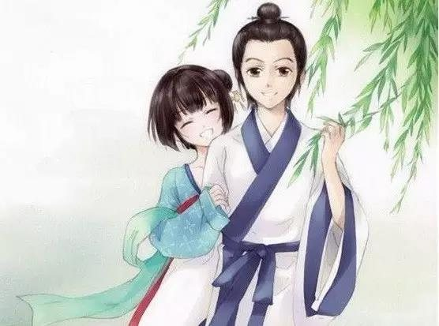
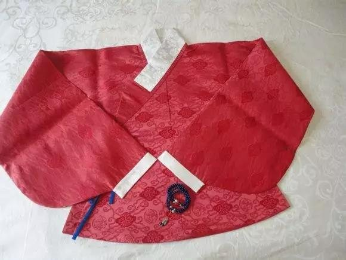
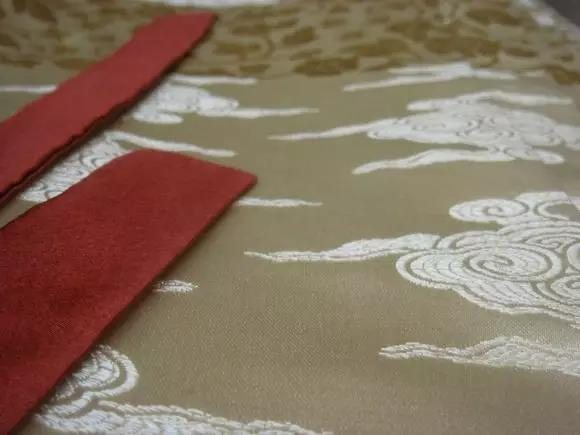

买了汉服你知道该怎么保养吗？
 [汉服的洗涤]：
依面料和款式而定，可以用洗衣机洗涤棉麻的单衣，加裏的衣服和礼服宜用手洗或者乾洗店乾洗。
[汉服的晾晒]：短衣、裤可用衣架晾晒；可用长竿子穿袖晾晒大点的衣服，或用晾晒网晾晒。晾干后可以熨平存放或穿著。
[汉服的存放]：可折叠存放短衣裤；大一点的衣服也可折叠存放，不宜压多，或用挂衣竿存放。注意防蛀。
 汉服的清洗方法1、洗汉服应该反转洗，尽量手洗，如果放入洗衣机要用洗衣袋包上以后再清洗。
2、深色的汉服第一次可能会有部分掉色，注意的是深色和浅色的必须分开洗，购买了深颜色的汉服可以用温盐水先浸泡半小时，可减轻脱色。
3、棉织物第一次洗涤会有缩水情况，洗涤前可放在水中浸泡几分钟，但不宜过久，以免颜色受到破坏。
4、麻纤维织物——麻纤维刚硬，抱合力差，洗涤时要比棉织物轻些，切忌使用硬刷和用力揉搓，以免布面起毛，洗后不可用力拧绞。
5、汉服不可用热水浸泡，以免使汗渍中的蛋白质凝固而粘附在汉服上，且会出现黄色汗斑。
6、涤纶织物 先用冷水浸泡15min，然后用一般合成洗涤剂洗涤，洗液温度不宜超过45℃。领口、袖口较脏处可用毛刷刷洗。 洗后，漂洗净，可轻拧绞，置阴凉通风处晾干，不可曝晒，不宜烘干，以免因热生皱。其它化纤织物的洗涤与此类同。
7、同时应在通风阴凉处晒晾汉服，以免在日光下曝晒，使有色织物褪色。 晾汉服的时候也必须反转晾晒，避免紫外线作用直接在正面而引起汉服变旧。
 汉服的保管及保养为使汉服充分体现耐用方面的功能，必须妥善进行保管，通过保养还可减少汉服发脆、变色的产生。汉服发脆、变色的原因有以下几方面：
（1）虫害和发霉。
（2）整理剂和染料因日光及水份的作用，发生水解和氧化等现象。如硫化染料染色时释放出的硫酸，会使纤维发脆。
（3）残留物对纤维的影响，如残留氯的氧化作用。
（4）由于空气的氧化作用而使织物发黄，如丝绸织物和锦纶织物的变黄。